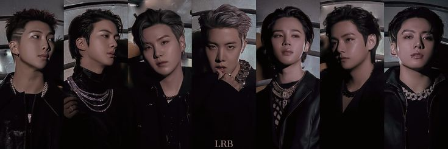
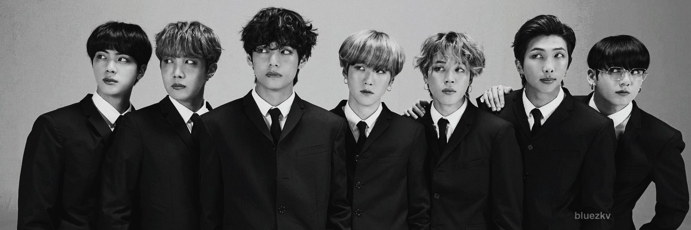
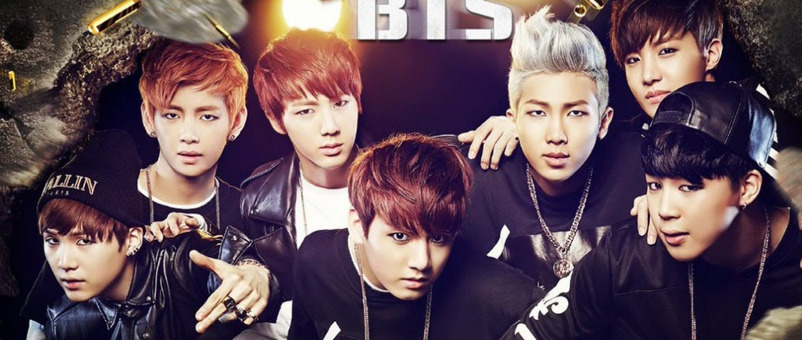

Sejarah Debut BTS

BTS atau Bangtan SonyeondanBTS adalah grup vokal pria asal Korea Selatan. Grup ini dikelola oleh Big Hit Music.
Nama tersebut kemudian berakronim menjadi Beyond The Scene pada Juli 2017. BTS juga memiliki nama Fandom yang diberi nama
ARMY. A.R.M.Y merupakan singkatan dari Adorable Representative M.C for Youth. Secara harfiah, Army dalam
bahasa Inggris berarti 'tentara', pengertian ini diselaraskan dengan nama Bangtan Boys yang bermakna baju anti-peluru.
Awal Mula Terbentuknya BTS

Terbentuknya boy group BTS bermula dari pertemuan para membernya yang cukup menarik untuk dikulik.
Pertama ada Kim Namjoon atau RM yang juga memiliki posisi sebagai leader. RM sendiri mulai tertarik dengan dunia
musik terutama rap setelah mendengar lagu rap berjudul Fly dari Epik High. Bermula dari itu, RM mulai bergabung
dengan para rapper populer termasuk Supreme Boi produser dari Big Hit Entertainment.
Sampai akhirnya, RM mengikuti audisi di Big Hit Entertainment dan menjadi anggota pertama BTS.
Selanjutnya Suga, bergabung dengan Big Hit Entertainment setelah mengikuti audisi secara pribadi melalui
seleberan promosi tentang kompetisi rapper bernama Hit It. Ia pun lolos audisi lalu bergabung dengan BTS di tahun 2010.
Sementara J-Hope atau Jung Hoseok yang berbakat di bidang dance bergabung dengan Big Hit Entertainment melalui audisi.
Bakatnya tersebut mengantarkannya lolos audisi dan menjadi trainee di agensi. Berikutnya yang bergabung adalah Kim Seokjin
atau Jin, dulunya bergabung dengan agensi Big Hit Entertainment setelah mendapatkan casting secara langsung oleh staf dari agensi.
Awalnya Jin tertarik di bidang akting, namun ia justru mengikuti audisi menyanyi dan menari.
Padahal Jin tak memiliki pengalaman apapun. Meski begitu Jin akhirnya lolos jadi trainee dan bergabung dengan BTS.
Maknae grup yakni Jungkook selanjutnya bergabung dengan Big Hit Entertainment. Meskipun Jungkook mendapat tawaran dari
berbagai agensi besar, namun akhirnya ia memilih Big Hit Entertainment. Melansir dari koreaboo, alasannya adalah karena
ia sangat ingin tergabung dengan RM yang memiliki kemampuan rap sangat menakjubkan.
Akhirnya Jungkook jadi member BTS bersama sang leader grup.
Setelah itu V atau Kim Tae Hyung, bergabung di agensi secara tak sengaja. Pasalnya dulu V hanya ingin mendukung
temannya untuk ikut audisi di Big Hit Entertainment, namun V justru mendapatkan tawaran audisi juga. Sampai akhirnya
ia lolos dan menjadi anggota dari BTS. Terakhir ada Jimin, bergabung dengan agensi atas saran gurunya di sekolah.
Bakatnya di bidang dance mengantarkannya lolos audisi dan bergabung dengan BTS.
Sementara member terakhir yang bergabung adalah jimin yang mengikuti audisi atas saran guru
sekolahnya yang melihat bakatnya menari. Member BTS pun semakin lengkap dengan kehadiran jimin itu.
Melakukan Debut di Tahun 2013

Setelah semua member melakukan trainee, akhirnya BTS secara resmi melakukan debut pada Juni 2013. Tanggal 12 Juni 2013, Video Klip
lagu No More Dream dirilis di youtube Hybe Labels. No More Dream menjadi lagu bergenre hiphop yang dipilih sebagai lagu debut.
Lagu tersebut merupakan bagian dari album 2 Cool 4 Skool yang menjadi album perdana
BTS. Lalu di tanggal 13 Juni 2013, agensi memperkenalkan ketujuh member BTS dan melakukan panggung debut pertama
di stage MCountdown.